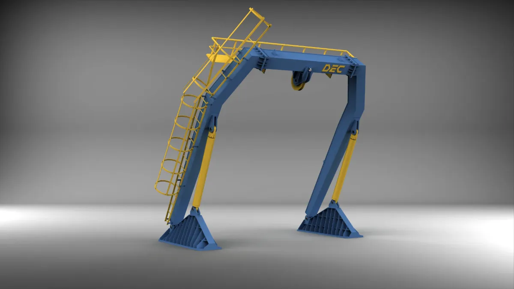
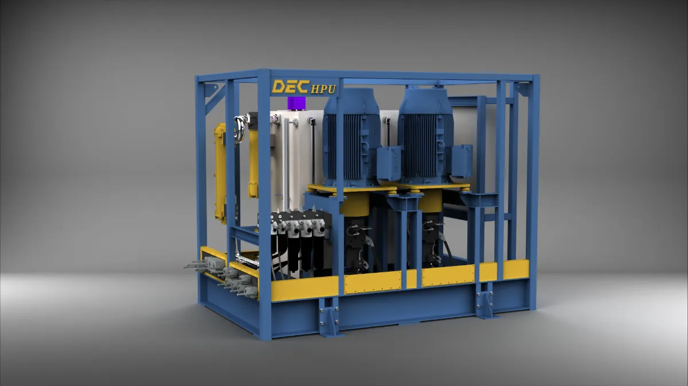
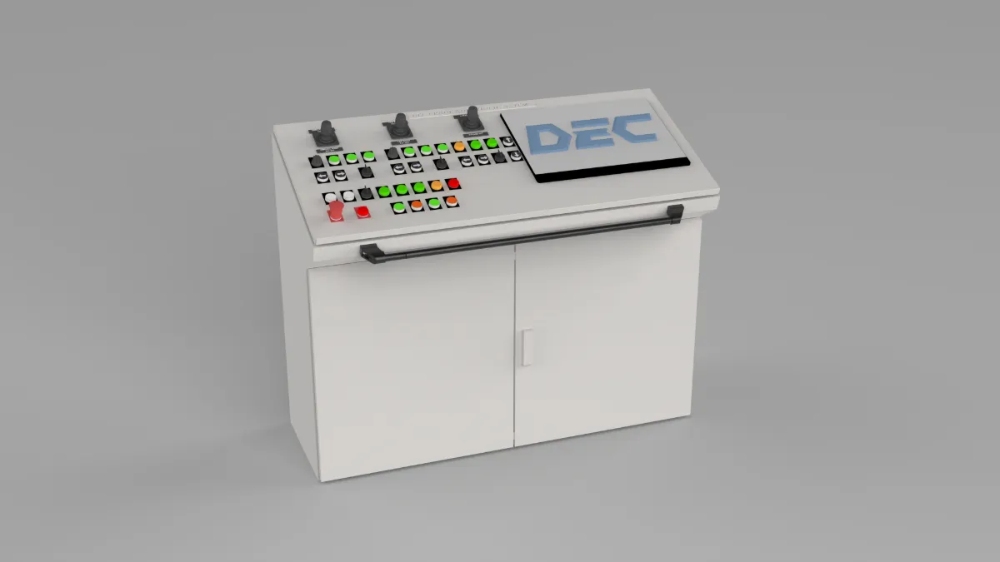
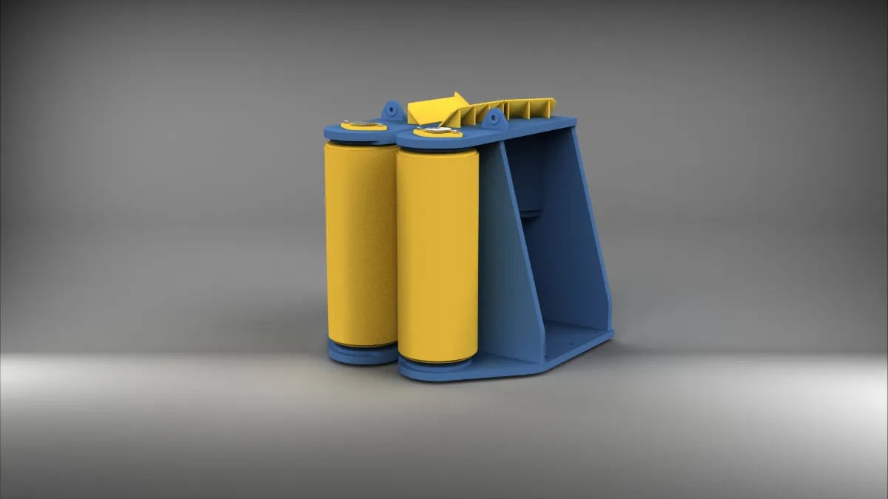

A-FRAMES – LAUNCH AND RECOVERY SYSTEM (LARS)
DEC A-Frame are robust and reliable lifting structures designed for offshore and subsea operations. They are engineered to handle extreme conditions while providing precise and controlled handling of various equipment.

TYPICAL APPLICATIONS
✔ Anchor Handling – Secure and efficent deployment and retriveal of anchors.
✔ Buoy Handling – Lifting and positioning of navigation and mooring buoys
✔ Plough HandlingHandling – Deployement and retrieval of subsea ploughs for trenching operations.
✔ Subsea Handling – Safe and precise lowering and lifting of subsea equipment.
✔ Launch&Recovery of Submersibles (ROVs, AUVs, vb.) –Controlled launching and retrieval of remotely operated and autonomous underwater vehicles.

FEATURES
✔ Hydraulic Drive – Ensures smooth and controlled for efficient operation.
✔ Bolted or welded to Deck – Flexible installation options to suit vessel requirements.
✔ Safe Working Load(SWL) from 2T to 200 tons – Designed to handle a wide range of loads.
✔ Local and/or Remote Control – Can be operated from the deck or remotely for safety and efficiency.
✔ Operates in Sea States Up to Level 6 –Engineered for stability and reliablity even in rough sea conditions underwater vehicles.

OPTIONAL FEATURES
🔹 Main Lifting Winch on A-frame – Integrated winch for direct handling of loads.
🔹 Deck Mounted Diverter and Stern sheaves– Provides additional control and flexibility in wire routing.
🔹 Hyraulically Damped Scissor Framee – Enchances stability and shock absorption during operation.
🔹 Movable Docking Frame – Adjustable docking system for safe and secure equipment handling.
🔹 Docking Head with Sheave Arrangements for ROVs–Specifically designed for smooth ROV operations.
🔹 Wireless Control – Enables remote operation for increased safety and convenience.
🔹 Towing and umbilical Winch Integration for Plough Operations – Custom solutions for specialized subsea trenching applications.

DEC A-Frames, are designed for heavy-duty offshore applications, ensuring safety,efficency, and reliability in demanding marine enviroments.
.